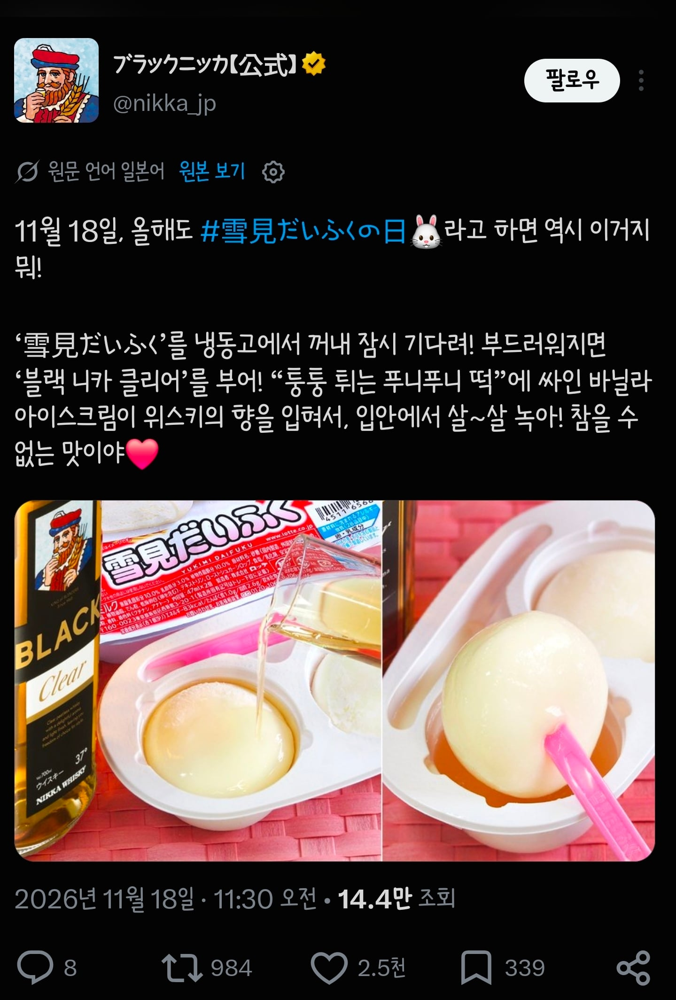

찰떡 아이스크림을 꺼내서 해동시킨 다음 블렌디드 위스키를 끼얹어서 먹으라고 함
(블랙 니카 클리어 위스키는 직구가로 약 2만원)

찰떡 아이스크림을 꺼내서 해동시킨 다음 블렌디드 위스키를 끼얹어서 먹으라고 함
(블랙 니카 클리어 위스키는 직구가로 약 2만원)
저는 캡틴큐로 해보겠습니다.
그건 럼이잖아
저것도 실험이니까
더 싼 버번으로 하면됨
바닐라향 좋은애들로
니카 삿포로 가서 먹어봤는데 맛없어서 놀람 내취향이 아니더라
저거 하이볼용 개싸구려라서 니트로는 못먹어
하이볼로도 먹었는데 맛없어서 놀랐음 그래서 그냥 산토리 하이볼 시킴 ㅋㅋㅋ
산토리도 업소용으로 4리터짜리 있는거 보고 깜놀
산토리 업소용 다팔리고 업소용
위스키 안주로 수분감 있는 디저트가 ㅈㄴ 잘 맞더라
위스키에 아이스크림이나 초콜릿 잘어울림
일본쪽 트위터에 비슷하게 말아먹는ㅋㅋㅋ팁 있던데
초코송이를 위스키에 잠기게하고 적시게 한다음 먹으면 그것도 존맛이래
바닐라 아이스크림에 버번 위스키 살짝 부어서 먹으면 개맛있다
바닐라아이스크림에 버번같은건가
저 국물을 마시라고
바닐라 아이스크림이랑 위스키 조합은 근본이지
주사기로 인젝션하면 맛있겠다
해동시키라고 하면 다 녹여서 먹는 멍청이 나오잖아
지금은 망한 성수동 바에서 저런비슷한거 있었음
위스키붓고 불붙여서 팔았는데
연애할때 좋다고 쳐먹었던 추억이있음
닛카블랙 살면서 먹어본 저가 위스키중에 제일 맛 없어서 깜짝 놀람
슬기로운 알중들은 얌전히 선생님이나 사먹도록
센세 선생님이 뭐죠 알려줘요
말 그대로 선생님이요. 티처스 위스키 라는 놈이 있읍니다.
성시경이 주우재 초대해서 준 코스요리가 아이스크림에 위스키였던가
위스키랑 바닐라 아이스크림이 그렇게 잘 어울린다고 하던데
닛카는 좀 별로고 요이치가 좀 괜찮음
닛카 라인업에 요이치가 있는거였네 내 혀는 쓰레기야
가쿠빈(40도) : 휘발유
블랙니카(36도) : 경유
산토리올드(43도) : 바이오디젤
투게더에 위스키 부어먹어도 맛있긴해
앙 존나 맛있어 근데 블랜디드는 밍밍해져서 별로더라
46도나 50도 넘는걸로 ㄱㄱㄱ
투게더에 버번 부어먹는거랑 비슷한 원리임
니카 존나 맛없던거 다들 느끼는구만ㅋㅋㅋㅋㅋ
프롬 더 배럴은 진짜 킹만한데 블랙은..
버번에 투게더 먹는게 더 맛있음
테두리에 밀가루 발라져있잖아
가끔 손님들한테 서비스로 디저트 주는데
그때 주는게 바닐라 아이스크림에 위스키 살짝 뿌려주는 거임
저거 맛있음
하이볼용 가쿠빈 있어서 그걸로 뿌려줌(아이스크림 1스쿱에 위스키 20cc정도)
전문가시네요 면세 10~30만원 사이 위스키 추천 부탁드립니다! 먹어본거중엔 조니워커 블루, 시그넷, 글렌알라키 12년 좋아하고 피트는 3대장 중엔 라프로익이 좋더군여
어제 동키갔다가 잭다니얼 블랙? 1980엔 하길래 2병 집어왔다..오늘은 저 아이스 사가서 와이프랑 하나씩 먹어봐야겠다
일본와서 산토리 올드위스키 (검정 둥근병) 이거 사마셔라
가쿠빈 그런거 먹지말고…
찰떡아이스도 일본이 원조임?
조니워커 블랙으로 해볼까